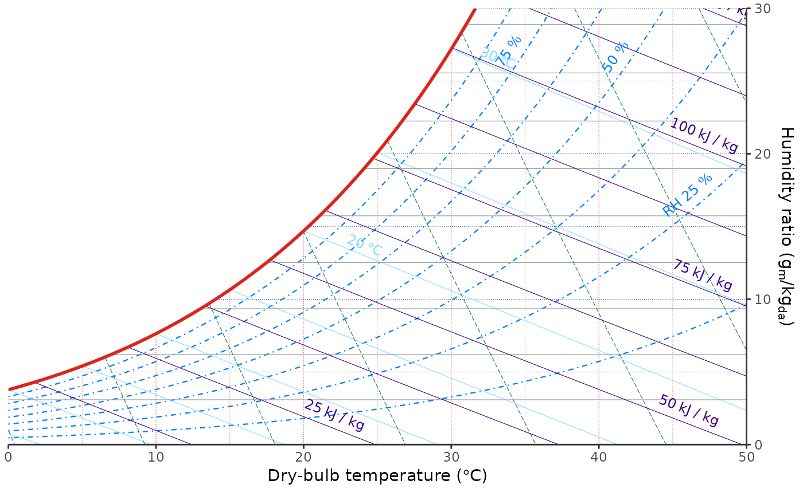
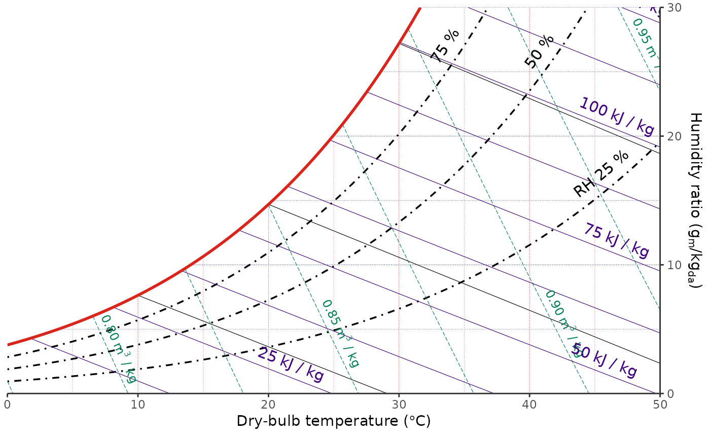

These helpers provide ggplot-style controls for psychrometric reference
grids. They do not add data layers; they mark a grid as visible and let
coord_psychro() render it in the panel background.
Usage
geom_grid_relhum(
...,
show = TRUE,
label = TRUE,
label_loc = 0.95,
label_parse = FALSE
)
geom_grid_wetbulb(
...,
show = TRUE,
label = TRUE,
label_loc = 0.1,
label_parse = TRUE
)
geom_grid_vappres(
...,
show = TRUE,
label = TRUE,
label_loc = 0.5,
label_parse = FALSE
)
geom_grid_specvol(
...,
show = TRUE,
label = TRUE,
label_loc = 0.95,
label_parse = TRUE
)
geom_grid_enthalpy(
...,
show = TRUE,
label = TRUE,
label_loc = 0.95,
label_parse = TRUE
)Arguments
- ...
Line style settings passed to
ggplot2::element_line(), such ascolour,color,linewidth,size, andlinetype. Label style settings can be supplied withlabel.*names to keep them separate from line style settings, such aslabel.colour,label.color,label.size,label.alpha,label.family,label.fontface,label.lineheight, andlabel.vjust.- show
A single logical value. If
FALSE, hide the corresponding grid.- label
A single logical value. If
FALSE, hide labels for the corresponding major grid lines.- label_loc
A single number in range
[0, 1]indicating the label position along each grid line.NAhides labels.- label_parse
If
TRUE, labels are parsed as plotmath expressions.
Examples
ggpsychro(tdb_lim = c(0, 50), hum_lim = c(0, 30)) +
geom_grid_relhum() +
geom_grid_wetbulb() +
geom_grid_enthalpy()

ggpsychro(tdb_lim = c(0, 50), hum_lim = c(0, 30)) +
geom_grid_relhum(color = "black", linewidth = 0.6, label.size = 4) +
scale_relhum_continuous(
breaks = seq(25, 75, by = 25),
minor_breaks = NULL
) +
geom_grid_wetbulb(color = "black", label = FALSE) +
scale_wetbulb_continuous(
breaks = seq(10, 30, by = 10),
minor_breaks = NULL
) +
geom_grid_vappres(show = FALSE) +
geom_grid_specvol(label_loc = 0.90) +
geom_grid_enthalpy(label.size = 4)
